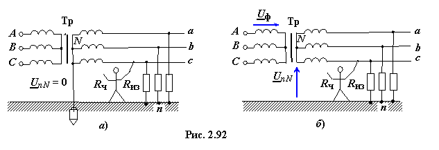

К системам электроснабжения предприятий, устройств освещения и других трёхфазных потребителей предъявляются следующие требования:
• экономичность при строительстве и эксплуатации;
• обеспечение постоянства напряжения и частоты у потребителей (согласно ГОСТ 21128-83 допускаются колебания напряжения устройств рабочего освещения в пределах −2,5, ..., +5 %, двигателей − от −5 % до +10 % номинального напряжения);
• безопасность и надёжность эксплуатации.
Требования экономичности в большей степени удовлетворяются в трёхпроводных трёхфазных
схемах электроснабжения при соединениях фаз звездой без нейтрального провода и треугольником. В этих схемах генератор и приёмник соединены всего трёмя проводами и при одной и той же мощности достигается, по сравнению с трёмя однофазными системами, 50 % экономии материала. В четырёхпроводной системе дополнительно необходим нейтральный провод и экономия материала несколько уменьшается.
Постоянство напряжения у потребителей обеспечивается в схеме соединения фаз звездой с нейтральным проводом и треугольником, у которых теоретически режимы фаз не зависят друг от друга. В схеме же соединения фаз звездой без нейтрального провода изменение нагрузки одной из фаз приводит к появлению напряжения смещения нейтрали и изменению фазных напряжений приёмника: напряжения одних фаз уменьшаются, других − увеличиваются.
Безопасность эксплуатации в большой степени зависит от выбранной схемы соединения фаз потребителя. Нередко несчастные случаи происходят при контакте человека с токоведущими или нетоковедущими
частями электрических установок при пробое их изоляции. При прикосновении к токопроводящим частям электрическое сопротивление человека и сопротивление изоляции  образуют
несимметричный приёмник, а земля − его нейтральную точку n (рис. 2 92а, б). Величина возникшего напряжения смещения нейтрали зависит от того, заземлена или нет нейтраль
N вторичных обмоток трансформатора Тр.
образуют
несимметричный приёмник, а земля − его нейтральную точку n (рис. 2 92а, б). Величина возникшего напряжения смещения нейтрали зависит от того, заземлена или нет нейтраль
N вторичных обмоток трансформатора Тр.
В схеме с заземлённой нейтралью (см. рис. 2.92а) напряжение и напряжение, приложенное к человеку, равно фазному: ; если же отсутствует заземление нейтрали N (см. рис. 2.92б), то, чем больше сопротивление изоляции , тем меньше напряжение, приложенное к человеку, и с точки зрения безопасности человека, схема с изолированной нейтралью имеет некоторое преимущество по сравнению со схемой с заземлённой нейтралью.

Однако при пробое изоляции одной из фаз и замыкании её на землю схема с заземленной нейтралью предпочтительнее, так как при этом возникает ток короткого замыкания, проходящий через предохранители пускателей, которые быстро отключают приёмник от сети. В сети с изолированной нейтралью отключение приёмника от сети не происходит: напряжение неповреждённых фаз относительно земли возрастает до линейного, т. е. возрастает в раз, что опасно для обслуживающего персонала. Подобная неисправность длительное время может оставаться необнаруженной и изоляция сети из-за повышенного напряжения может быть пробита.
Особенно опасен для человека пробой изоляции на металлический корпус и другие токопроводящие части установок, нормально не находящихся под напряжением. Для уменьшения опасности поражения,
согласно правилам техники безопасности, обязательно применение защитных заземления и зануления.